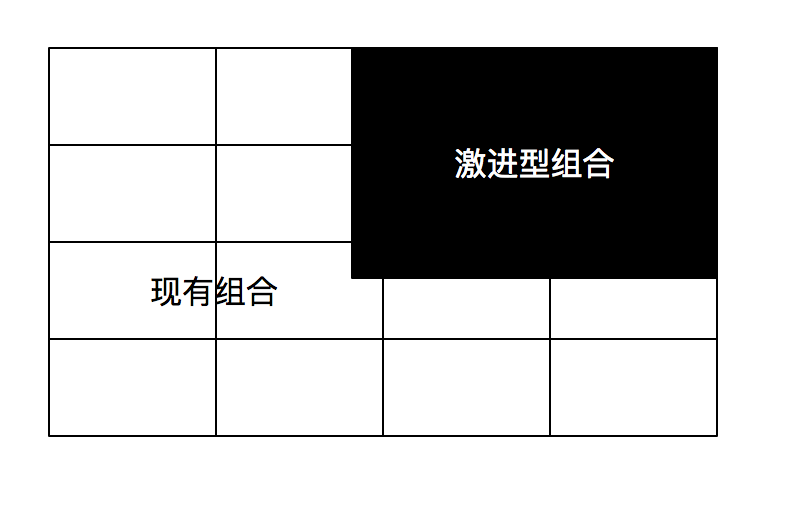

一、新产品——区别优胜者与失败者的因素和驱动成功的因素
A.引言
1.新产品成功的八个关键因素
1）独特、优秀的产品
2）强烈的市场导向意识
3）前期准备工作也是成功的关键
4）清晰、早期的产品和项目定义
5）螺旋式开发
6）放眼世界
7）精心构思、妥善安排的发布活动是新产品成功的重要环节，而完善的营销计划是发布活动的重中之重
8）速度
B.项目层的关键成功因素
1.具有独特的客户或用户利益的优秀产品具有 以下共同点：
- 性价比突出，减少客户的总成本（高利用价值）
- 从客户的角度来看，提供比竞争对手更高的产品质量
- 更好地满足了客户需求，提供了竞争对手的产品所不具备的独特性能，或者解决了竞争对手的产品存在的问题
- 提供容易被察觉的、对客户有益的产品利益或属性
2.产品竞争力的两个元素：产品效用和产品优势。产品效用是指用户在购买和使用新产品后获得的利益，产品优势是指新产品超越竞争对手产品的程度
3.产品优势来自产品的设计、特色、属性、规格，甚至品牌和定位。重点在于，“优势”是站在客户或用户的角度来说的，而不是研发、技术或设计部门的角度
4.对客户的需求和欲望、竞争状况和市场的了解是产品成功的一个基本因素，市场导向必须贯穿于整个新产品项目。推荐做法：
- 概念生成。最好的概念来自客户
- 产品设计。用户和客户意见在产品设计中发挥着重要作用
- 前期准备。最佳绩效公司会利用各种形式来了解客户对产品概念的看法
- 项目期间。不应停止听取客户意见。征求客户意见并与客户一起检验概念或设计需要不断重复的“螺旋式开发”流程
5.在产品的实际设计和开发之前的工作决定了新产品开发的成败。前期工作包括：
- 初始筛选——决定是否开始项目（概念筛选）
- 市场预评估——最初的市场调研
- 技术预评估——最初的、快速的项目技术评估
- 详细的市场调研和客户意见调查
- 在决策是否进入开发之前一定要进行经营和财务分析（制订商业计划）
6.平衡，最佳绩效公司会在市场导向和技术之间取得适当平衡
7.前期工作的时间可以通过缩短开发周期和提高成功率来补偿：
- 首先，所有的迹象 都表明，如果忽略了前期工作，产品失败的可能性会更大
- 其次，从扎实的前期工作中得到的更好的项目定义，也会加快开发的进程
- 最后，在产品生命周期中，不可避免地会发生设计变更 ，因此应避免变更发生在设计完成或量产期间
8.有两种情况是造成时间损失的罪魁祸首，它们是“项目范围蔓延”和“不稳定的规格”。项目范围蔓延是指项目定义总在变化 ：项目可能从单个客户项目开始，之后又以多个用户为目标，最后又成为产品的平台。不稳定的规格是指产品定义（产品需求和规格）在整个产品开发阶段都在变化
9.出色的产品和项目定义工作，这个定义包括：
- 定义项目范围（如是面向国内还是国际，是一款新产品还是平台开发）
- 确定目标市场——明确预期客户或用户
- 描述产品概念和将会给用户带来的利益（包括价值）
- 描述配置战略，包括目标价格
- 产品特征、属性、需求，以及规格清单（区别“必须具有的”和“希望具有的”）
10.一系列不断重复的步骤或循环，从而向客户展示 不断改善的产品以获得反馈和进一步完善，这些循环在不断重复“构建—测试—反馈—改善”这些过程，螺旋式开发
11.市场的全球化需要全球性的新产品，如果只局限于国内市场或再加上几个临近的国家，产品的市场机会将受到严重限制。以全球为导向 指将市场的范围扩大到全世界，产品除了满足国内市场，还应该满足国际要求
12.产品不仅必须是优秀的，还必须要发布到市场，在市场上交易并且给予适当的资源支持。高质量的发布的新产品的赢利能力密切相关，而有效的售后服务是新产品发布成功的关键
13.不要假设好的产品会自己卖出去，也不要在新产品发布之后追悔，有效的市场发布有以下五项要求：
- 市场发布是新产品开发流程的一个有机组成部分
- 市场发布计划必须从新产品项目的早期开始
- 市场发布与它所依赖的市场信息一样重要
- 必须给予发布适当的资源支持
- 执行发布的人员，即销售、技术支持、其他一线人员
14.速度产生竞争优势，但只是一个过渡性目标，缩短上市时间要遵循某些原则：
- 事先做好前期工作，并且要基于事实，而不是根据传闻和想象得出一个早期和稳定的产品与项目定义
- 在项目的所有阶段明确活动的执行质量
- 有效的跨职能项目团队是按时完成开发任务的基础
- 采用并行流程
- 与并行流程相结合
- 分清主次并集中精力，做觉得是但价值大的项目
C.企业层面的关键成功因素
1.企业成功的九项关键因素：
- 在新产品开发中获得成功的企业，拥有一套突显自身优势的创新和技术战略，能够为项目的理念、方向和资源分配提供指导
- 成功的企业会减少开发项目的数量，提高项目质量，追求项目种类多样化
- 善于利用核心竞争力是成功的关键：陌生的开发项目会把企业带到一个不熟悉的领域
- 瞄准有吸引力的市场，成功的概率会更高，市场规模、成长和竞争环境，都是非常重要的选择标准
- 拥有必要的资源
- 合适的组织结构
- 拥有支持和促进创新活动的氛围和文化
- 高级管理层的支持不一定能保证成功，但是绝对是有用的
- 多阶段、严格的“阶段-关口”从创意到发布的流程
2.公司的新产品战略：
- 明确地定义产品创新目标
- 产品创新在实现公司目标中所起的作用
- 定义战略竞争领域——将NPD的工作集中到战略竞争焦点领域
- 战略桶
- 产品规划
- 长期承诺
3.消除不好的项目的意愿与将有限的资源优先集中在最好的项目上的需求是紧密相关的，也就是要果断地做出继续/停止和优先排序的决策
4.“关口”审查计分卡包括：
- 战略
- 竞争力和产品优势
- 市场吸引力
- 杠杆作用
- 技术可行性
- 风险和回报
5.“在自己有实力的地方发起进攻”，协同意味着在新产品项目的需要和公司的资源、能力、经验之间具有很好的配合，取决于：
- 研发或技术资源
- 市场、销售和分销资源
- 品牌、形象及营销沟通和促销资本
- 制造或生产运营的能力和资源
- 技术支持和客户服务资源
- 市场调研和市场知识资源
- 管理能力
6.如果项目的协同评价等级很低，那么只有存在其他非常重要的原因时，才能继续进行这个项目
7.有时在新的和不熟悉的市场、技术或制造工艺方面冒险是必要的
8.市场吸引力两个维度：
- 市场潜力。积极的市场环境，即大的和成长中的市场
- 竞争状况
9.项目团队成员不要同时参与太多的项目或做其他任务，必须在项目的早期得到资源，使基础性的前期预备性工作和早期的市场调研工作得以进行
10.组织项目团队的方法：
- 为每个重要的NPD项目明确指定一个执行团队，即团队人员是这个项目的一部分，最重要的是，跨职能团队来自技术、销售、市场营销、运营等部门的成员构成
- 项目团队自始至终保持在项目团队使用的状态
- 明确的项目团队领导者
- 面向项目团队成员的中央信息共享系统
- 项目团队对项目的最终成果负责
11.营造积极的创新氛围：
- 支持和鼓励企业家精神和承担风险的行为
- 高级管理层不惧怕偶然会遇到的投资风险
- 新产品成功能够得到奖励和认可
- 承认团队而不是承认个人的努力
- 高层管理者不要“过于微观地管理”项目和时常对项目成员说三道四
- 项目审查会议是开放的
12.高层管理者为产品开发做出长期承诺；建立产品创新的愿景、目标和战略；为产品开发提供必要的可用资源，确保这些资源在短缺时不被挪用；必须给出一个严格的从创意到发布的流程；必须参与到新产品流程之中，审查项目、制定及时和果断的继续/停止决策
二、创新管理框架——帮助管理者提升业绩的模型
A.创新管理框架
1.创新管理（Innovation Management，IM）框架，把创新管理分解成许多项元素，方便管理人员学习、实践、评估并最终获得改善（有效管理）
2.成功创新的公司具有的五项能力：创意管理、市场管理、组合管理、平台管理和项目管理
3.IM框架将每项能力分解成了五个维度，分别是：战略、组织和文化、流程、技术和工具、度量指标
4.三个层面：公司、行业和宏观环境
B.IM框架结构
1.能力
- 1).创意管理：内容包括界面范围、技术和扫描评估、应用研究，与早期使用者/科研中心等
- 第一个问题是公司的竞争优势如何，即公司的技术与市场因素的比较
- 创意管理是公司有效识别、吸收和掌握有关新技术或新创意的信息的能力。这些技术或创意可以帮助公司开发出具有高特性的突破性产品和服务
- 2).市场管理：内容包括确定客户购买喜好，市场划分，设计市场进军计划，定价，广告和宣传活动，客户管理，等等
- 长远竞争力从根本上取决于产品和服务在市场上的认可度和吸引力
- 需要对宏观市场进行划分，以便观察如何定义产品特征或特色，从而在再有市场或新市场中获得全面优势，
- 需要准确掌握潜在市场具有的吸引力，并进行优先排序，以便为投资决策提供支持
- 3).组合管理：内容包括风险/回报评估，实物期权分析，阶段性组合回顾，项目评估和选择，以及管线承载力等
- 拥有一个分配均衡，符合战略的高价值项目组合，是实现价值最大化的关键
- 有效的组合管理，是一个持续的资源分配过程，旨在完美达成公司的业务目标
- 4).平台管理：内容包括参考平台，体系评估流程，模块化设计，模块/子系统合理化，以及综合设计/采购决策
- 指在一套常见模块的基础上同时设计和规划产品/服务线和产品/服务系列的能力
- 优势：降低总成本、使用经过验证的构建模块、周期时间缩短
- 5).项目管理：内容包括结构清晰的项目开发流程，关口审查，基于实际的继续/停止决策，综合财务管理，以及生命周期规划
- 管理者们不应该插手项目，而是要限制自己对设定好的检查点进行干预。
- 管理者的重点应该是为项目提供充足的资源，包括人力和资金资源。
- 权力授予项目团队，让团队承担起所有工作
- 只根据实际情况制定决策
2.维度
- 1).战略：内容包括目标业务区域/市场，入市障碍，价值主张，战略控制点，优势、劣势、机会、威胁（SWOT），标杆和竞争性评估，等等
- 共同的核心：传达给客户的价值主张
- 定义了公司的具体目标和公司实现目标的具体方法。只有导致市场变化的战略才有价值
- 好的战略往往细节清晰，脚踏实地。这些战略会以大量的定量分析开场，具有彰显着智慧、远见和冒险精神的实实在在的分析
- 2).组织和文化：内容包括权力关系，人力资源，技能培养和发展（组织），组织的基本信念、价值观和行为，领导力、动机和奖励（文化），等等
- 一个组织只有靠着员工集体的能力才能创造价值
- 管理者必须明白，所有的员工都可以参与创新和创造价值
- 文化是一切活动的通用语言和背景
- 组织是一家公司为实现共同目标所拥有的资源和技能的正式联合体和方向
- 3).流程：内容包括优化工作流，活动时间表，任务定义，分工和决策说明，等等
- 确保了公司各部门、各环节表现一致，为长远利益的积累提供了基础。
- 通过分享整个公司的最佳实践和经验，为公司的学习和流程改善提供了支持。
- 内容包括流程和流程元素说明、生命周期模型说明，以及数据
- 是公司的蓝图
- 4).技术和工具：内容包括虚拟工作环境，推动协作和预测模型的团队空间，项目评分等级，竞争评估模板，非结构化文本分析，等等
- 早期产品创新时，一项重要工具就是非结构化文本分析
- 对于管理层来说，主要的挑战是用最少的工具及时为公司提供必要信息，然后不断地把它们纳入流程中
- 5).指标：内容包括关键绩效指标，平衡计分卡，奖励计划，等等
- 需要注意：所选指标必须清晰体现公司的创新战略、员工的绩效与他们所获的奖励挂钩
3.层面
- 1).公司：内容包括寻找机遇，技术/市场评估，解决方案开发，商品化，等等
- 决定了企业的架构
- 组织学习是创新成功的主要因素
- 企业对于外部信息的开放程度对创新成果有着极大影响
- 鼓励和支持公司内部的交流
- 2).行业：内容包括竞争分析，加入行业组织（如贸易协会）、空间聚类，等等
- 企业如果想成功创新，需要确定自身的竞争对手、合作伙伴、供应商和客户群
- 3).宏观环境：内容包括了解人群特征及流行趋势，根据政策法规进行调整，科研成果监管，等等
- 技术创新来源于科学研究及行业领军企业的互动
三、服务开发
A.引言
1.服务交付质量的稳定性和服务的一致性是服务成功的关键因素
B.服务开发的独特之处
1.“服务”的四个特性可以概括为四个“I”：个性化的（Individualized）、无形的（Intangible）、即时的（Instantaneous）、不可分割的（Inseparable）
2.个性和体验
- 服务和产品最显著的区别在于某个客户在消费任一特定服务时都会与其他客户不同
- 提供商能够为每个客户提供独特的、“定制”的服务体验，而不是一种普通的、通用的解决方案，这是服务成功的关键要素之一
3.无形价值
- 服务不是产品，而是一种无形的交互作用或体验
- 这种独特性在开发的同时也带来了机遇和挑战
- 没有任何有形的东西可以让客户评估，只有体验本身是评估和再评估的对象
4.即时评估
- 服务评价的即时性和发展性。在与客户接触流程中的每个点上都会形成新的观点和期望。
5.不可分割的内容
- “不可分割”特性强调：服务是单个组成部分的集合体，包括与客户接触的每一点。服务完成时，服务被当作一个整体来评估，而不是对服务链的每个不同的阶段分别评估
- 在伴随产品的服务中，服务的个性化特征是很明显的
C.服务开发流程
1.一个阶段化的开发流程是这样的：管理新服务如同他们沿着开发的不同阶段前进，从问题和想法的提出到概念形成和市场发布
2.公司创新战略
- 1)一个有效的新服务战略应该主要包括：
- 资源战略，包括成功的新服务创造所需的财务和人力资源
- 在今后5年期望由新服务填补的财务增长缺口
- 沿着开发流程推进想法和观念的筛选标准
- 列明了创造新服务所需的财务和人力资源的资源战略
- 2)财务增长缺口有助于公司确定将要完成的新服务工作的数量
- 3)为新服务项目制定一套利润目标，同样可以确保项目朝着正确的方向前进
- 4)筛选标准帮助区别成功和失败的服务，区分观念的优先次序，并确保与战略和角色保持连续一致
3.服务开发与成型：客户意见
- 问题识别：是服务开发流程中最重要的阶段，通过识别创造性的、以客户为基础的问题和机遇，为突破性的新服务的开发奠定了基础
- 新服务的创意和概念化：目标是产生多个解决方案，这些方案主要针对那些在问题识别中没有涉及的需求、愿望、问题和困难
4.让员工参与并制订服务方案
- 因为服务的成败在很大程度上取决于交付是否成功，所以在早期的问题识别和创意会议中，服务交付员工的参与是绝对必要的
- 不管服务对客户而言是否可观，它都应该表示出活动顺序流程和相互关系
5.原型和未知：在交付流程中分化
- 通过筛选的概念被转换成完整的原型，并进行细致的市场测试，制订发布计划与服务交付计划
- 原型测试是新服务开发流程的最主要的要素之一
- 市场发布是服务创造的另一个独特之处，因为它在本质上是一个没有终点的流程
6.培训是新服务开发流程的组成部分之一
- 1)服务的最终交付要由人完成或需要人的协助
- 2)员工的培训应该围绕下面三个主要领域：
- 公司的总体战略和服务的战略角色
- 危机管理解决纷争
- 服务的实际交付流程
D.服务开发的最新趋势
1.服务所特有的另一个性质是敏捷性，服务的敏捷性使其能调整和跟踪社会发展趋势。服务创新的“4S”
2.无缝沟通和互动（Seamless Interactions and Communications）
3.社交技术融合（Social Technology Integration）
4.优质的客户体验（Stellar Customer Experiences）
5.扩展和延伸的潜力（Scalability and Expansion Potential）
四、商业模式创新：核心之外的创新
A.公司实现商业模式创新的模型
1.技术维度，主要包括渐进式创新、结构性创新和激进式创新三种情况。
- 渐进式创新是指对现有技术进行提炼、改进和充分利用
- 结构性创新是指根据现有技术的变化或渐进式变化 ，不断调整系统中的元素结构
- 激进式创新是指创造一种全新的核心技术
2.价值网络，包括“上游供应商，下游消费者、零售商、经销商，以及合作伙伴和配套行业合作伙伴”
- 模式内竞争关系的结构性反映，同时也展示了企业需要维持的责任和关系网络
- 价值网络可以进一步分成现有价值网络、以现有客户为目标的新的价值网络，以及非消费者为目标的新的价值网络
- 新的价值网络是指至少存在一个全新维度的价值网络
- 以现有客户为目标的新的价值网络，是指通过新的价值网络与正在使用产品或服务的客户建立联系
- 以非消费者为目标的新的价值网络，目标消费者从事接触过类似技术
3.预期回报率，最低预期回报率是指项目的财务预测与最低预期回报之间的关系
B.拓展
1.为了帮助公司维持现状（如减少损失）而利用现有价值网络中的渐进式技术进行的创新，都属于开发性创新。需要创新框架中的三个维度同时变动，对先前的行动进行延伸，该类活动称为“拓展”
2.开发性活动可以提升公司的竞争力，回报率不会低于最低预期回报率
3.公司为了推出次世代产品而进行的一切活动都属于“拓展”，不过“拓展”也可能涉及更高程度的创新和/或创意水平
C.持续创新
1.持续创新战略以现有价值网络中的现有客户或高端客户为目标，主要依靠结构性或激进性技术实现，因为这种战略发挥了既有价值网络的作用，并且维持现有的财政回报率，涉及更高程度的技术创新，还可能彻底改变公司的优势
D.价值网络创新
1.主导企业为了实现现有的财务回报率，而将目光投向新的价值网络，这就是价值网络创新
2.另一类价值网络创新是以非消费者为目标的
E.预期回报率创新
1.预期回报率创新是指为企业既有价值网络中回报率较低的项目注入新的技术，主导企业通常都不会使用低成本商业模式，因为它们达不到传统的预期回报率。这一回报率来自那些建立较久的企业，而这些企业的成本结构是针对 高成本商业模式进行优化的。但是，这些达不到传统预期回报率的项目也是对高端市场的保护，因为它阻止了低端企业的进入。一旦这些企业进入了高端市场，它们便会抓住一切机会牟利，最终颠覆整个市场
F.混合创新：融合预期回报率创新与价值网络创新
1.混合创新是指运用技术创新在新的价值网络中发展低回报项目
2.在现有客户中建立全新价值网络
3.针对非消费者进行的混合创新
五、开放式创新和成功的风险投资
A.引言
1.“开放式创新”由加利福尼亚大学的亨利·伽斯柏提出，定义为：为了加速创新速度，组织可以并且应该听取来自外部的声音，抓住来自内部及外部的市场机遇
2.通过目的明确的知识交流，加速内部创新进程，扩张创新在外部市场的应用。开放式创新认为，组织在提升技术水平时，可以并且应该听取来自内部及外部的声音，抓住来自内部及外部的市场机遇
3.开放式创新需要集中特定工具，包括授入/授出、联盟及收购、技术咨询，以及企业风险投资——由外部创办的新公司间接或直接投资，或者让内部部门脱离，形成风险项目，从而明确划分外部及内部的企业风险投资
4.需要各企业员工的协作——信任、尊重、权威、资源
5.开放式创新成功的因素还包括：
- 公司高层具有强大的战略使命感
- 匹配的组织结构，以便高效地掌控创新平台
- 注重通过创新渠道与外部伙伴建立联系
- 持续不断地推动改善
6.开放创新模型：创新矩阵、开放式创新漏斗图
B.创新矩阵

C.风险投资
1.传统意义上的风险投资资本家（Venture Capitalist,VC）是指那些为高潜力、新技术的创业公司投资的个人或企业，投资的内容包括管理人才和金融资本。尽早发现那些能够在投资期内创造高回报率的潜在机遇是核心技巧
2.企业风险投资可以分为两类：内部投资和外部投资。内部企业风险投资的对象是内部创业公司的全新业务机遇。外部企业风险投资是指间接（通过风险投资基金）或直接为创业公司投资
D.风险投资战略
1.如何制定全面的风险投资战略？
- 最根本的问题是确定整个风险投资战略的目标：战略目标和财务目标孰轻孰重，还是同等重要
- 如果企业以战略目标为首要目标，必须注意两个问题：哪些目标必须实现？如何衡量回报率？
- 风险投资战略以哪一阶段的企业为重心？起步阶段、扩张阶段，还是成熟阶段？
- 常见的投资额度是多少？
- 风险投资企业如何参与到公司的运营中？
- 区域范围：覆盖全球还是专注于某个地点？
- 关键的技术、市场需求和优先事项是什么？
- 还有哪些关键的战略考虑？
E.风险投资组合风险管理
1.风险投资组合必须有足够的覆盖面才能扩大影响和降低风险
2.成功的风险投资战略需要建立在两个基础上：大范围的覆盖面，以及5-10年的长远愿景和回报规划（包括战略和财务回报）
F.组织结构如何助力风险投资成功
1.成立一个独立的企业风险投资专职部门，可以在很多方面协助整个过程顺利进行
2.由一批经验丰富的投资经理组成，规模通常不大
3.好处：
- 明确责任划分，避免利益冲突
- 企业风险投资专家可以为大家指明方向
- 代表公司的所有业务
4.风险投资部门的绩效参考两个标准：战略回报、投资组合的财务回报
5.什么样的组织结构才能推动风险投资走向成功？
- 风险投资部门的核心团队和业务部门中的风险投资支持团队必须时刻保持结构上的一致，坚持合作；业务代表和投资经理每天必须进行交流互动
- 明确划分风险投资部门（负责财务回报）和风险投资及业务部门中董事会代表的角色和职责
- 快速的决策流程和清晰的权力划分，以应对风险投资行业不断变化的形势
- 保持敏锐：观察市场环境，富有洞察力
G.风险投资流程
1.寻找项目、发表意向
- 1)寻找项目，指追踪和决定投资机遇
- 有投资经理参加的会展和投资者会议
- 公司投资的基金会的交易管理，以及基金会为（企业）投资者举办的有限合伙人会议
- 业务团队在市场中的联络人
- 在业务驱动的机遇和风险投资驱动的机遇之间保持健康平衡，这一点很重要；此外，与业务部门的创新目标保持同步也很重要
- 2)筛选项目，要想建立合作关系，项目必须要通过以下两次筛选
- 二次筛选——战略相关性
- 二次筛选——业务可行性
2.投资流程（责任审查、谈判、达成交易）、
- 管理层制定和执行战略的能力，这些战略关乎创业公司的成败
- 公司的财务状况：完成整个项目共需要多少花费？这并不是说在这之后项目必须自我维持下去，但是现有的投资者需要一个完美的收场
- 创业公司的知识产权情况（专利和技术）：创业公司是否能保护自己的技术地位？这些内容是否受保护，还是说很容易被复制？创业公司是否拥有自主使用权？
- 创业公司的业务计划和入市战略是否符合实际？了解公司是否具有投资吸引力，以及投资企业是否能与其他志同道合的投资者建立良好的合作关系（反之亦然），具有非常重要的意义
3.投资管理（从投资中获得战略和财务价值）
- 业务部门与风险投资企业保持沟通，将合作机会最大化
- 代表风险投资企业加入创业公司的董事会，尽职尽责，引导公司创造出最大化的价值
- 在项目快要结束时，做好退场准备——可以接受其他公司的收购，也可以将风险投资企业持有的股份出售给新的投资者
H.文化氛围
1.员工才是实现开放式创新（包括风险投资）的最重要的因素。公司的环境——确切来说是文化——是促使员工改变固有习惯和操作流程、打开思想、挑起责任的必要元素
2.“卓越创新”项目，重点包括：
- 刺激业务团队的创新意识，从而改善创新战略和能力，提升领导水平
- 通过加强项目管理水平、优化团队的构成、改善行为效率等方法，进一步保证优先项目的成果
- 通过对市场和客户的广泛调研（包括在市场中寻找创新伙伴），深化对市场的了解
- 创造良好的创业氛围，强化创业者的素养
- 在整个组织内部制定和追踪创新目标，选拔创新模范，鼓励员工以绩效和成果为导向
六、如何成功地面向新兴市场进行新产品开发
A.新兴市场中的机遇和风险
1.新兴市场的构成并不单一，主要由三部分组成：高端市场、中端市场和低端市场

2.跨国企业最好能像精打细算的当地企业一样，试着考虑低成本产品
B.新兴市场中成功的新产品开发
1.调整创新战略：在新产品开发战略中对新兴市场进行详细分析；高级管理层的支持；向整个公司介绍新的战略方针
2.认识新的消费群体：主动应用新的市场研究方案；深入了解客户；访问当地的大客户和意见领袖
3.带来新的性价比：仅保留关键功能；避免过度设计；大幅降低产品整个生命周期所需成本；从零开始设计全新的产品
4.发扬“甘地”精神：选择简化的解决方案；打破思维模式；“够用”就好；冲出思维框架
5.在当地建立研发机构：将产品开发工作交给当地工程师；在当地建立合作网络
6.调整营销战略：接受非常规的销售渠道和营销方式；选择当地的品牌代理
7.使用新的商业架构：推翻现有的商业模型；与当地企业合作；由下而上思考
8.在当地寻找合作伙伴：与当地行业、科研机构和非政府组织建立良好关系；熟悉当地环境
C.国际收益
1.针对新兴市场开发的新产品，在发达市场也同样受欢迎：
- 企业在新兴市场建立研发机构的目的是开发符合当地需求的产品，但是这些研发中心也可以开发一些面向发达市场的产品，可以利用当地大量的人才资源，在全球范围内创造收益
- 将新产品开发本地化，让本地团队承担起更多责任，可以帮助企业培养真正的全球化思维
- 针对新兴市场进行的新产品开发可以通过量产降低高端产品的整体成本，如原材料采购
- 一些跨国企业成功地把原本为新兴市场开发的产品推广到了发达市场，开发了全新的客户群体。这种现象称为“反向创新”
七、创新的前端高效实践
A.引言
1.新概念开发（NCD）模型，把前端分成了三个部分：
- 引擎（或模型中心），主要负责愿景、战略、氛围、领导力和整体管理等影响五类活动的问题
- 内环由前端 的五个活动元素组成，分别是：确定机遇、机遇分析、生成和完善、创意分析和概念界定
B.NCD模型总览
1.引擎进一步划分成两个主要部分：高级管理层和氛围，以及团队和协作
2.五项活动（或可控元素）主要由三部分构成：确定和分析机遇，创意生成和筛选，以及概念界定
- 机遇是指当前形势与预期未来之间的业务或技术差距
- 创意是指新产品或服务的最原始雏形
- 概念是指有明确形式的产品，包括产品的主要功能和带来的好处
C.组织资源的氛围
1.企业为前端活动和组织氛围搭建的组织资源是一切前端活动的基础，包括：
- 高级管理层在前端活动中的参与度，包括管理者亲自参与到前端活动中，在项目讨论中发挥中心作用，参与制定关键决策，为新的前端项目提供支持并在其中发挥关键作用。前端活动，尤其是开发变革型和颠覆型产品或服务时的前端活动，始终比渐进式创新的工艺改善更具风险
- 愿景限定了前端项目的范围，并为前端活动提供了明确的方向，描述了企业对未来的期待。愿景和战略不同。通常，每次产品突破都是由最贴近消费者或用户的员工创造的
- 战略为企业的创新方案提供了投资路线图，它应该与企业的愿景保持一致
- 资源是指分配给前端活动（包括确定和分析机遇、生成和完善创意，以及概念界定）
- 氛围是指组织内部常规的行为、态度和情感模式。氛围代表着组织的内部长久以来的价值观，因此很难被改变
2.企业要想获得成功，必须从组织资源（如高层管理者的参与、愿景、战略、资源）和组织氛围入手
3.优秀的创新领导会把创新的的权力下放给员工，自己则退至后方进行领导。纳尔逊·曼德拉：“领导就像牧羊人一样。他让最强壮的羊带队，其他羊自然会跟上；而牧羊人自己则跟在羊群的最后。羊群根本没有意识到，真正的领头人其实在队伍的最后”
D.团队和协作
1.几个关键的可变因素：
- 1)高效团队
- 团队成员在团队之外活动非常积极
- 在咨询客户意见和收集高层反馈的同时，全向心投入开发工作
- 开发和生产同时进行
- 2)团队领导
- 选择团队成员
- 带领团队
- 管理高级管理层
- 3)实践社团（Communities of Practice,COP）
E.渐进式产品开发的活动要素
1.关键可变因素包括：
- 了解当前市场
- 创意完善
- 创意筛选
- 概念界定
- 概念筛选
F.突破式产品开发的活动要素
1.全新内容：
- 空白区域颠覆性市场知识
- 使用技术发明完善创意
2.在突破性创新中取得成功的企业，更擅长用技术发明来完善创意
八、获得火花和冲击——构思和概念的产生
A.引言
1.“构思和概念的产生”
- 授权进行构思
- 形成团队，使用正确的人来产生正确的构思
- 构思会议（生成构思和初始概念）
- 筛选，改进想法和最终概念
2.新产品开发流程的广泛探索阶段
- 探索规划的增长战略
- 组建和培训团队
- 价值链需求、技术成果和预测
- 构思和概念的产生
- 概念成型（技术可行性和客户需求）
- 为零号关口做准备
B.制定构思规则：关注焦点的奥秘
1.重新确认新产品开发团队的规则 ，如果有可能，将构思的范围缩小到一个特定的领域，该领域是你在战略上感兴趣的或你认为是有前途的，应该做到以下几点：
- 1)有聚焦的项目目标
- 2)以“解决问题的任务”来阐述新产品开发的挑战
- 3)在构思流程中建立3-5个标准来辅助团队
- 4)关注前期的三角窗得出的那些能够驱动和聚焦构思流程的有限的数据
C.形成团队
1.看看团队是是否有以下人群：
- 决策者，拥有能够推动构思向前的资源
- 实施者，可以将构思推向市场
- 专家和客户，表述价值链和关键技术
- 多样性
2.构思缺乏多样性，可以通过引入外部专家和客户构思生成者来克服，可以缩小关注的范围并扩大团队范围，让价值链中以前没有参加的人参与进来，从而增加成功的机会
D.构思会议
1.创造力练习
- 会议两个原则：在开会前把会议简报发给大家、要求队友们带着自己的构思来参加会议
- 创造力练习表现为与某项任务有强制联系的隐喻构建和发散思维
- 隐喻构建练习要求在构思流程中不能直截了当地列出构思清单并生成构思
- 爱因斯坦：“如果一个构思在诞生时就完美无缺，那么这个构思恐怕没什么前途”
2.分析练习
- 将顶级客户的需求列在竖轴，将关键技术列在横轴，然后对此进行形态分析比较，可以产生一个构思路径图，检查每个区域块的逻辑性或有趣的联系
3.体验练习
- 可以促使你从意料之外的来源生产创意
4.设施
- 构思的流程是凌乱的，最好在足够大的空间中进行
- 无论选择哪里，该地点必须能够提供丰富和刺激的感官组合，并尽可能地封闭讨论
5.构思时间表
- 第1天的主要任务是尽量扩大构思的广度
- 1)创造力、分析和体验的练习加活动，并让所有人员参与进来
- 2)将专家和客户组成的“金鱼碗”（Gold Fish Bowls）核心组嵌入构思流程中
- 3)对构思清单的结构化、快速的推动
- 4)目标小组关注子任务并构建初始概念
- 第2天的主要任务是确保以下所有方面都被考虑到
- 1)目标分组讨论关注细节的需求和技术
- 2)目标分组讨论研究细节并解决问题
- 3)通过投票对构思进行初步筛选
- 4)外部人员、客户和专家的反馈
- 5)核心团队以构思准则中的标准对初始概念进行筛选
- 第3天的主要任务是对所筛选出的结构和构建的概念进行回顾，从而产生一个包括10-20个初始概念的组合
- 1)回顾以标准筛选出来的结果
- 2)挑选并生成初始产品概念以形成组合
- 3)将生成的概念重新定义为正式的概念
- 4)将“气泡式图表”（Bubble Chart）进行第一次修改以发现那些值得怀疑的组合价值
- 5)制订组合行动计划
6.不会在构思流程的早期 就将构思生成者的构思扼杀和埋没：
- 构思生成者需要休息
- 构思生成者需要时间来赶上他们的工作
- 保证运动和社交活动
7.对每天的构思进行记录并形成文件是非常重要的，不要漏掉任何构思：
- 完整的与会人员名单
- 所有参与者签订的协议，以及报酬说明
- 构思列表
- 获得的概念
- 会议前研究和热身讨论
- 流程说明
E.概念筛选和构思改进
1.创新会议中的概念筛选是在培育概念
2.筛选流程的例子：
- 咨询性的投票
- 拣选
- 相似性归类
- 组合
九、产品创新组合管理
A.组合管理的定义
1.组合两方面的定义：
- 战略流程：进一步筛选和探索市场、产品和技术方面的投资/机遇
- 战术流程：战术组合管理是用来分配或筛选方案的操作方法，是进行项目筛选和资源筹集的首选流程。主要内容是消除限制 ，从而更好地管理交易管道
B.组合管理中可能出现的问题
1.产品创新的组合管理的对象是未来事件和机遇；进行项目筛选和优先决策所需的大多数信息有可能是不确定信息，也有可能只是不实信息
2.决策环境充满变化
3.组合中的项目有着不同的进度，但是都是为获得资源而相互竞争
4.可供分配的资源有限，不能兼顾所有项目；项目间的资源转移通常存在遗漏
5.数据的有效性和可靠性十分关键
C.组合管理的四个主要目标
1.战略一致性：目的是确保最终组合能够真实反映公司的创新战略
2.实现组合价值最大化：目的是在合理分配资源的基础上实现价值最大化
3.维持项目平衡：目的是达到预期的一系列参数平衡，确保战略一致性
4.维持合理的项目数：目标是维持活跃项目所需资源和可用资源之间的平衡
D.如何评估组合管理——优秀范例
1.包含高价值项目的组合：你的组合中是否包括高回报、高利润
2.项目种类完美平衡的组合：组合中属于不同市场和技术领域的长期项目和短期项目、高风险项目和低风险项目达到了完美平衡
3.组合中的开支（资源）分配真实反映了企业的业务战略：这是实现战略一致的一种方法，确保分配给不同种类、市场、业务领域等项目的开支能够反映企业的战略优先顺序
4.合理安排项目的优先顺序：管理者应该尽量集中一切NPD力量，按照资源的优先顺序对项目进行排序
5.维持活跃项目数量和可用资源（人力和财力）之间的完美平衡：理想情况下，管理者需要尽量维持可用资源（一般是人力和财力资源）和资源需求（项目数量）之间的平衡，将活跃的项目数控制在自己的能力范围内
6.项目组合符合业务目标和战略：这是项目组合的七项原则中的一项，大多数企业（57.2%）都实现了战略一致性
7.拥有专业完善的组合管理系统：在组合管理流程中，管理者需要定期对组合进行审查 ，以确保组合中的战略内容和战术内容一切正常
E.组合管理出现问题的预兆
1.缺少战略一致性
2.低价值项目：过多延伸、修正、强化和短期项目
3.缺少重点：项目泛滥，缺少统一的决策标准，项目数量不断增加
4.选择错误的项目
F.制定战略和战术组合管理概要
1.确定组合中的战略内容，需要具体界定资源的分配方式和对象
G.界定战略汇总
1.实施战略的真正含义就是在限定范围内进行预算分配
2.常见的战略汇总分类包括产品类型、平台、市场划分和项目类型
3.由于资源稀缺非常普遍，企业不得不做一些艰难的决定：
- 是需要多少资源推动项目才能确保成功实现战略目标
- 是在各个区域合理地分配资源
H.战术组合管理
1.战术决策的本质是项目的优先排列
I.对组合进行审查
1.高级管理层每年需要对组合进行四次审查，关键内容和问题包括：
- 所有的项目是否与企业的战略保持一致
- 管理层是否有权对项目进行优先排序
- 活跃项目中是否存在需要淘汰或升级的项目
- 组合是否处于平衡状态？项目组合是否合理
- 是否所有的项目都能获得足够的资源
十、发现新业务机遇：麦哲伦流程
A.康宁集团的创新方式
1.两个决策：
- 对康宁以往的创新项目（包括成功项目和失败项目）进行分析，并以此为基础制定一份“创新配方”
- 成立战略发展组织（Strategic Growth Organization,SGO），主要任务是确定机遇、酝酿准备和业务开发
2.“创新配方”：在处理每个项目的时候，康宁都能根据解决方案的特殊性、相关的知识产权，以及/或者独特的资本投资来达到和维持战略控制的目标
3.战略发展组织（SGO）：目的是推动企业的战略更新，主要职责包括：
- 寻找有潜力发展成为主要业务的新构思和新机遇，包括那些高价值的复杂系统问题
- 发展大型新业务
B.麦哲伦流程：发现和审核新构思
1.创新讨论会
- 科研人员和SGO员工，来自学术机构、政府实验室和各行业的思想领袖齐聚一堂，共同出谋划策，让更多来自研究团体和新业务团体的成员参与进来
- 大部分主题都非常宽泛，这样才能保证构思的多元化；同时，讨论会的每个主题都非常鲜明，这样才能保证专家在一天之内介绍完现状和主要的技术/市场问题
2.对话领军企业
- 经常组织一些目标明确的分享会，邀请相关领域的领军企业参加
3.白皮书框架
- 1）白皮书作用是确定市场中是否存在待解决的问题，以及这些问题是否值得进一步研究，有以下几个特征：
- 对机遇进行全面扫描，而不是深入研究
- 以决策为导向
- 快速
- 可供管理层使用
- 统一的形式
- 2）围绕着广泛的二级研究，包括：宏观趋势、市场特征、问题识别、技术评估
4.机遇评估
- 1）是指对新的业务机遇进行为期4-6个月的详细评估，从而了解它们的商业和技术可行性
- 2）目的是为企业决策提供数据支持，而决策的内容就是这些机遇是否值得企业投资：
- 更详细地了解待解决问题和潜在解决方案
- 介绍基础技术和现有/替代技术
- 市场情况总览
- 潜在客户群总览
- 从原材料到客户的价值链地图
- 介绍竞争环境
5.CTC汇报和决策制定
- CTC的职责是管理创新机遇的雏形；他们会举行月度会议，对新机遇的开发情况进行审核、讨论和指导
- 由CTO带队，成员包括下属员工、研究部门代表，以及CEO团队成员
- 决定了一个机遇 是否能够获得所需的长期投资
十一、新产品开发团队的相属关、知识分享和绩效
A.相属关系的定义
1.相属关系的定义非常广泛，如分散式相属关系、社会式相属关系及家庭式相属关系
2.分散式相属关系是指同一组织内成员的共性
3.社会式相属关系打破了团体的界限，描述的是人与人之间的共性
4.家庭式相属关系并不是建立在简单的共性基础上的，意味着人与人之间更倾向于给予，而不是接受。即使形势再恶劣，这种关系也可以帮助家庭成员理解、支持和保护彼此，是一种紧密的社会心理关系，可以增加人们对彼此的信任和为彼此牺牲的意愿
B.NPD团队中的相属关系
1.家庭式的相属关系可以让团队成员之间的社会心理关系更加紧密；随着个体队员之间相属关系的加深，团队成员最终将拥有未分化的认知
2.工作团体，这种团队内部的相属关系较低，成员间存在分化的认知，但是仍然合作得比较顺利，工作团队适合执行重复性的生产任务；但是这种工作却不适合互动性较高的团队
3.家庭式团队可以更好的分享关键信息和解决问题
4.家庭结构和部落结构其实很相似，都在认知基础上的无条件接受；这与团队不同，因为团队的认可取决于队员的绩效。对于家庭来说，评价绩效的标准就是做正确的事，而不是达成某些目标
C.相属关系对NPD绩效的影响
1.相属关系可以推动知识分享
- 1）团队内部的相属关系：
- 迟早建立良好的沟通习惯/快速启动技术
- 家庭拥有共同的目标/明确的团队目标
- 构建关系/团队建设
- 家庭共处/团队搭配
- 家庭可以包容不同的观点/跨职能培训
- 2）团队间的相属关系
- 了解不同的看法/了解其他团队
- 家庭有一致的目标/团队目标与业务部门的战略保持一致
- 第三方干预/紧密联系的团队
- 心理治疗师鼓励家庭成员加入治疗过程/经理鼓励员工的参与
- 3）组织间的相属关系
- 处理各方面的问题/综合性项目组合规划
- 家人永远一条心/联系同时进行的开发流程
- 共同解决家庭问题，构建家庭关系/构建和培训联合团队
- 家人住在同一屋檐下/跨越组织界限的合作
- 参与和责任共担/联合项目管理
- 同甘共苦/分享风险、回报和成绩
2.知识分享对NPD绩效的影响，知识分享的形式：
- 跨团队知识交流
- 产品数据管理系统（PDMS）
- 知识管理系统（KMS）
十二、新产品开发中的虚拟团队：特征与挑战
A.引言
1.虚拟团队的特征是信息和通信技术（Information and Communication Technologies,ICTs）的依赖
B.虚拟性程度
1.团队的虚拟性最常见的就是按照成员的地理或实体分布来划分。另一种常见的划分方式是按时间来划分
2.团队的虚拟类型包括三类，分别是空间分布、配置分布和时间分布
- 空间分布是虚拟团队最直观的特点，指的是团队成员之间的物理距离
- 配置分布是对空间分布的延伸，指的是在各实体位置上的人员安排
- 时间分布指团队成员工作时间的重合度
3.在项目的首尾阶段并置团队，可以提高项目效率
C.沟通
1.信息丰富程度是指一种沟通媒介能够传递的信息类型和数量
2.同步性是指利用媒介进行双向沟通的性质和速度
D.人际/关系构建
1.团队成员在空间上的距离越近，他们之间的信任程度就越高
2.团队本身的特征（如文化多样性等），也会影响团队的凝聚力和信任
3.资源投入和领导可以增强团队凝聚力
4.关系冲突——通常由缺少沟通、过高的多样化、资源不足等问题导致——会对虚拟NPD团队造成负面 影响
E.协作
1.NPD活动的效率取决于团队的协作能力
2.三种协作技巧：
- 标准化，意思是明确各成员在项目中的角色
- 规划，意思是在项目开始时就划分出任务和子任务，确定职能部门互动的时机和方式
- 相互调整，意思是根据项目变动调整团队活动
F.绩效
1.虚拟NPD团队绩效评估标准
- 机遇确定、决策质量、决策速度、团队学习、目标达成、资源效率、发布时间、产品成功
G.ICT选择
1.ICT选择指南
- 电话/音频会议、视频会议、语音邮件、电子邮件、文件储存
十三、获取客户对产品开发的需求
A.引言
1.如果产品和服务不能解决人们的问题，或者不能以有竞争力的成本解决人们的问题，那么它就是失败的
2.新产品开发的成功可以通过执行以下两种途径之中的一种来获得
- 公司首先要对围绕某个问题的客户需求有全面、彻底的了解 ，这个问题必须是客户希望获得更好的解决方案的问题
- 公司基于新技术或新的产品特征开发一种新产品，判断该产品是否能够有效地解决客户的问题从而使客户愿意以公司可以接受的价格购买该产品
3.客户不能准确地告诉公司应该开发什么样的新产品；不能提供可依赖的关于任何他们没有经历过或不了解的事件的信息
4.客户能够提供关于那些他们了解或者有过亲身体验的产品的可依赖的信息
B.获取客户需求的方法
1.了解客户需求
- 1）客户需求是一个产品或服务所要解决的问题和它表现出来的功能，反映了产品能让你做什么而不是让你怎样做
- 2）产品特征反映了人们解决问题的方案。产品特征是产品发挥功能的方式，解决方案和产品特征的变革速度比大众需求快得多
- 3）客户需求的解决是与整个产品功能相关的
- 4）客户在整个产品功能上还会有一些特殊的需求，成功的新产品必须满足这些需求
- 5）客户的需求通常是非常复杂的，有时不同的需求是相互矛盾的
- 6）没有任何产品是完美的。每种产品都是一种折中品，一系列复杂的客户需求只传递了特定的产品特征和功能
- 7）技术和竞争的演变使得产品特征不断发生变化，然而客户需求对于产品特征来说是相对稳定的
- 8）项目团队如何界定哪些内容可以很好地陈述客户需求和问题？
- 客户的语言（Customer language）
- 清楚（Clear）
- 简明（Concise）
- 特定的环境（Contextually specific）
2.从谁那里获得需求
- 1）如果团队的观察或沟通对象只限于已有客户，那么它其实是在和那些已经非常熟悉自己产品的人交流
- 2）进行客户调查的真正目的是收集来自非现有消费者的信息；这些人虽然没有使用过你的产品，但是经历过类似的问题
- 3）专家也不是最佳交流或观察对象，如果你的设备只有专家才能使用，那么你的目标市场就会大大缩小
- 4）只有那些在日常生活和工作中对产品有详细了解和体验的客户才能准确提出他们的需求
C.详细了解客户需求的方法
1.隐性信息是指某人具有但是不能清楚表达的知识，是一个人关于自己需求的知识的直觉方面
2.通过观察客户而获取信息的关键在于要认真地观察而非偶然地注视
3.客户的声音（Voice of the Customer,VoC）能够更快更有效率地收集客户的需求信息，是一种结构化的、深入的、一对一的情景访谈方法，它可以揭露一般性和细节性的客户需求
- 基于现实
- 间接询问而不是直接询问
- 围绕某功能进行询问，而不是整个产品和某产品特征
- 询问客户在不同的情形和状态下所面对的特殊问题，因为我们收集的信息必须有一定的广度和深度
4.开发团队也可以要求客户讲述他们最失败和最成功的一次使用情况
5.开发团队要成功地获取VoC要注意以下几点：
- 必须向客户询问产品的功能（他们想做什么）、特征（怎么做的），因为只有了解了功能需求，开发团队才能在技术和特征上做出权衡，以使产品在将来被客户所接受
- VoC只基于事实
- 询问客户在稳定使用情况下的详细情况
D.收集客户需求信息的实践方面
1.怎么更好地与客户合作
- 与客户合作的最基本的原则是让客户参与，公司从客户那里学习
- 只有在产品特征被定义之前来获取客户需求信息才是有意义的
- 当客户能够从中受益时，他最愿意与开发团队合作
- 要仔细聆听并找出困扰客户的问题
2.避免与客户合作时的缺陷
- 开发团队与客户交谈不是推销产品
- 没有采访足够多的客户以获取完整的需求信息，只观察一家客户公司的工作流程，或者只以本公司的人员代替真实的客户进行信息收集，比不进行客户调查更危险
- 必须采取多项措施以保证开发团队收集的信息被使用
十四、产品创新用户调研：定性法
A.深入了解信息
1.“黏性”“隐性”“情境”等用来形容知识或信息的表达 ，都传递了一个共同的讯息：转化与专业活动相关的知识，是一个充满困难的过程
B.进行深入了解的定性方法
1.定性研究需要研究者对某种现象有深入的了解和更细致的观察，而且研究对象的范围更小
2.关键是了解背景信息：研究者在进行产品创新项目的定性研究时，需要把重点放在一个（或几个）主题上，观察客户在日常工作中使用产品或服务的情况，而这些产品和服务就是改善的目标
C.人种学
1.人种学是通过融入研究环境来研究某种文化或现象的方法，研究人员需要成为被研究文化或现象中的一部分
D.网络人种学
1.一大批咨询公司开始对客户的微博、“赞”、博客和抱怨内容进行分析的追踪
2.大部分都属于定量数据挖掘，可以对用户的正面和负面反应进行分析
E.实地考察和独立访谈
1.在实地考察中，与用户一对一地讨论产品或服务的使用情况，是收集数据的最佳方式
2.实地考察和一对一访谈通常由公司的员工进行
3.用户参与是持续创新的关键
F.众包
1.用户的知识和专业才能的确可以用在NPD项目中。众包有时就会包括由用户参与的开放式创新：企业遇到难题时，可以向世界各地的专家求助
2.增加参与过NPD活动的客户和用户的忠诚度
G.领先用户
1.产品和服务的性能优势对于领先用户来说有着独特意义，他们会积极地推动生产者进行创新，并且有可能亲自参与到产品和服务的创新过程中
2.一般用户的理解的创新都属于可预测的渐进式创新；而领先用户出于对快速创新的需求，经常会参与到更高程度的创新活动中
3.“突发”用户是指那些“对产品创新抱有幻想并希望借此机会在主流市场上获得成功”的人，能够比领先用户更好地推动NPD活动
H.客户工具
1.这些工具可以“打开”产品或服务创新的大门，让客户可以参与进来，推动用户创新
2.把产品和服务创新的权力交给客户，企业只要坐观创新成果就可以
I.实时市场验证：运用实验法进行实验性学习
1.迭代实验法适用于许多不同的市场：在软件行业，它被称为敏捷（或极限）编程；在高科技产品行业，它被称为“探索与学习”或快速成型；对于企业家来说，它叫作效果推理（Effectuation），是精准创业的核心理论
2.步骤：
- 设计一款“最简可行产品”（Minimum Viable Product），在市场中进行可控实验
- 评估实验结果
- 从实验结果中吸取经验
- 反复进行跟进实验
十五、定量市场调研
1.两类不同的市场调研

A.定量市场调研步骤
1.四个关键的步骤：编写调查问卷；收集数据；分析数据；生成报告
2.收集资料的方法：
- 邮件：返回率太低
- 现场收集：费用低
- 面对面数据收集：发生在客户所处的“自然环境”中，费用昂贵但质量很高
- 电话采访：一种快捷、低成本的进行简短调研的方法（尤其对于B2B市场调研）
- 网络调研：保密 性是需要关注的问题，竞争者也可以复制我们的内容
B.定量市场调研能够回答的问题
1.市场调研可以回答下面三个关于客户的问题：
- 我们应该瞄准哪些客户
- 他们的真正需求是什么
- 哪些新产品最有市场前途
C.问题一：我们应该瞄准哪些客户？
1.市场细分是一种定量市场调研方法，能够将客户按相似性进行分类，全球公司决定在新产品开发流程中关注哪个细分的客户群
2.市场细分的第一步是让足够多的客户完成一项调查，目的是希望得到细分的类型
3.调研数据收集完毕，就可以使用统计上的聚类分析来产生细分群，并对每个细分市场进行描述，定义它的人口统计学/公司统计学上的特征
4.缺陷是我们太容易相信客户是显著不同的，而事实并非如此，细分情况会随着时间的推移而不断变化 ，因此公司需要对市场细分及时地更新
5.数据挖掘实际上是利用现有数据对市场进行细分。是一种把企业现有的数据库转化成业务资料的过程
6.感知图通过展示客户对于企业产品和对手产品的看法，让企业更好地了解客户，是一种描述客户看法的“思想地图”
7.感知图的可交付成果是从视觉上发现当前市场上的“空白”，公司针对这些市场空白开发新产品
8.感知图的优缺点
- 优点：在新产品开发之前，使用感知图查明客户是怎么评价现有产品的；识别市场空白
- 缺点：使调研枯燥冗长，应该安排适当的休息；使用超过六个产品，每个产品有八个特征
D.问题二：他们的真正需求是什么？
1.可以利用定性工具确定客户的需求，但是却不能用它们来为这些需求排序
2.最有前景的需求通常符合两个条件：关键及尚未确定
3.需求排序方法的优缺点：
- 优点：如果可能的话，尽量使用网络进行调研；对需求陈述进行预测试以确保表达清楚
- 缺点：测试超过40个需求（预先删除明显不重要的需求）；忘记按照客户进行细分而将结果生成交叉表格
E.问题三：哪些新产品最有市场前途
1.产品概念是对产品预期功能的设想
2.产品概念的陈述 一般包括100-150个字，也包括一些简单的图片
3.最好不要在产品构思阶段就确定产品的价格，概念测试的目的是了解客户对我们的新产品概念是否有兴趣
4.一旦产生了1-30个产品概念，开发团队就要把概念展示给客户，提供五个选项的答案：
- 肯定不会买
- 很可能不会买
- 可能不会买
- 可能会买
- 肯定会买
5.概念测试的优点和缺点
- 优点：测试尽量多的产品构思（至少每年测试50个）；在进行可行性研究之前进行概念测试（以保证不会过早抛弃潜在的获胜者）
- 缺点：产品概念的形式不一致；没有向具有高度创新性的客户调研高创新性的构思
6.联合分析通过提供一些情景并观察客户的行为来提示新产品构成中的哪些因素对客户是至关重要的
7.联合分析第一步是决定在分析中包含哪些产品特征；第二步是决定对每个产品功能要测试什么样的绩效水平。最好位于12-16个绩效水平之间
8.联合分析主要的可交付成果是高度准确的客户希望（或者不希望）和各种特征的权衡
9.联合分析的优点和缺点
- 优点：使用它来进行产品设计的优化；使用它来帮助确定价格；使用它来粗略估计销售量和应该调配的资源
- 缺点：忘记生成一个“如果这样做那么结果将会怎样”的电子表格来帮助解释结果；当可以用所有可能的假定时却只用了其中一两个
十六、新产品预测方法
A.确立预测目标
1.成功预测新产品的第一步就是确立预测目标。阐明预测的目的和意图，这样产生的预测才是有意义的预测
2.预测目标的作用是明确预测的目的和意向，从而提供一个有意义的预测
3.所谓“有意义”，就是说预测既实用，又方便理解，还能满足公司的需求
4.新产品预测的类型可按“潜在”“预测”和“市场”“销售”加以区分。潜在是指可达到的最大估计，而预测是指可达到的最可能估计，市场是指某一给定行业内所有公司，而销售是指某一被关注的特定公司
5.预测应用级别是指应用在公司等级中的哪一点上，一般的级别包括储存单元（SKU）级别、不同地点的储存单元（ SKUL）级别、生产线级别、战略业务单元（SBU）级别、公司级别、与/或工业级别
6.预测时间跨度是指新产品要预测多长时间的一个时间框架
7.预测间隔是指与时间预算相一致的预测尺度，以及预测需要更新的时间间隔
8.预测形式是指预测的衡量单元
B.新产品开发流程中的预测
1.前期的预测焦点是潜在市场，通常以美元计量，并告诉公司跟踪的是不是良好的机会。在早期阶段，营销和财务部门建立预测中起到了核心作用
2.在概念开发和前期技术评估阶段，预测主要调查潜在销售来确定公司跟踪的是不是一个好机会
3.进入技术开发和执行阶段，单元销售预测就显得很关键，运营和供应链部门就在为驱动运营决策而制定的销售预测中起到了关键作用
C.预测方法
1.预测方法分为三类：判断方法、定量分析方法和消费者/市场研究方法
2.判断方法代表了那些能将经验、判断和直觉变成正规预测的技巧，六种应用较多的方法为：行政管理者群体意见方法、购买力组成分析方法、情景分析方法、德尔菲方法、决策树方法和基于假设的模型方法
3.ATAR模型
- 单元销量=（市场规模）*（购买意向%）*（试用率%）*（可获得的市场份额%）*（重复购买率%）*（#每时期购买量）
- 利润=（收入-单元成本）*单元销量
4.定量分析方法又可以细分为时间序列方法、因果/回归模型方法和其他定量分析方法三种
5.时间序列方法通过分析销售数据、观察历史 “销售”模式，绘制有代表性的图表或公式，以期预测未来销售情况，包括：
- 趋势线分析方法
- 移动平均方法
- 指数平滑方法
- 类比分析（类比预测）方法
- 扩散模型方法
- 自回归移动平均模型（ARMA）/自回归整体移动平均模型（ARIMA）
6.因果/回归模型方法采用自变量通过统计方法，求得把自变量和因变量关联起来的公式，包括：
- 线性回归方法
- 非线性回归方法
- 对数回归方法
- 事件建模方法
7.其他定量分析方法包括采用独特方法或混合使用时间序列和回归技术的方法：
- 专家系统方法
- 神经网络方法
- 模拟方法
8.消费者/市场研究方法是先收集消费者/市场相关数据，对数据进行系统的分析，得出相应结论，并在结论的基础上进行预测，包括：
- 概念测试方法
- 产品使用测试方法
- 市场测试方法
- 上市前测试方法
D.新产品预测策略
1.四种新产品预测策略

E.新产品预测流程
1.假设管理是新产品预测流程的一个重要组成部分
2.新产品预测不是围绕一个点展开的，而是从一个面展开的
3.公司应该建立数据库以收集、跟踪产品新上市 的相关数据，特别是消费类包装商品行业
十七、社交媒体和产品开发
A.定义
1.社交产品创新。利用社交媒体原则和技术，为创新和产品开发流程提供支持
2.Web2.0。存在于组织以外的网络社交媒体、论坛和团体，如外部百科和博客、传统媒体网站、群众外包网站、定制创新商品等
3.Enterprise 2.0（E2.0）。组织内部或仅限合作伙伴与供应商使用的安全网络、论坛和团体，如内部网、社交产品开发工具、虚拟合作空间、电子公告板和协作商品（如SharePoint2010）等
B.发挥社交媒体在产品生命周期中的作用
1.构思生成、审核和分析：除了市场营销和沟通领域，社交产品创新发挥价值的第三大领域就是创新前端（FEI）。FEI的内容包括用新构思填补交易管道，并且把这些机遇和构思转化为商业价值
2.社交产品开发：在FEI阶段确定了最佳构思之后，社交媒体可以在产品开发中发挥强大作用，推动交流合作
3.市场情绪分析：这是可以通过社交技术进行改善的另一项业务流程，以帮助企业倾听、收集、解决和评估产品在市场中收到的反馈
C.常见问题及解决方法
1.战略：使用社交模型和技术进行产品开发和创新，并不是一个一眼就能看到结果的过程；这里没有以时间检验的行业惯例来为企业指明方向；需要与企业的业务和创新目标一致
2.人员和文化：人们会有许多误解；社交模型和技术并不是只有品牌推广和营销功能；明确地介绍和界定
3.商业流程：为新方案找一个负责人，一直都是关键中的关键
4.技术：许多公司在选择软件的时候都操之过急，还有制定战略、调整氛围和确定起点，就匆匆地做了决定
5.可持续性：核心通常是如何保证组织和协作伙伴的全程参与和配合
D.成功的三个基本步骤
1.与跨职能团队合作制订计划：在产品开发和营销领域中寻找对社交产品创新有兴趣的员工，然后与正在使用社交媒体工具的营销团队一起构思
2.决定起点：根据业务需求，利用制定好的战略来选择一个具体的、重点突出的起点。获得初步成功之后，再往其他业务流程中增加渐进式内容就容易得多了
3.制定可持续战略：社交产品开发带来的应该是温和的进货，而不是突发性的变革。实现可持续发展，关键在于绝不能凌驾于组织之上
E.成功案例
1.消费者的虚拟世界
2.内部知识网络
3.虚拟私人专家网络
十八、开发智能产品
A.智能产品特点
1.“产品智能”，它们分别是：合作能力、适应能力、自动操作能力、仿生互动能力、个性化能力及反应能力
2.合作能力：是产品与其他设备合作完成共同目标的能力
3.适应能力：指的是产品通过学习和自我改善来满足环境需求的能力
4.自动操作能力：指的是产品按照预设目标独立运行的能力，这个过程不需要用户的干预
5.仿生互动能力：指产品模仿人类的方式与用户进行沟通和互动的能力
6.个性化能力：指产品展示出来的风格特征
7.反应能力：指的是产品对周围环境做出的刺激/反应
B.智能产品带给企业的机遇
1.智能产品比传统的产品更具竞争优势
2.开发智能产品可以帮助企业开辟新市场
3.智能产品可以展示公司实力
C.智能产品推广中的潜在障碍
1.隐藏功能：产品的形式和使用之间的联系不如传统产品那样明显，有些智能产品甚至根本就没有这种联系
2.复杂的操作：过高的复杂度会影响到新产品的成功：对于智能产品来说也一样
3.风险担忧：客户对产品缺少信息，产品太过智能的话，客户会觉得自己失去了控制权
D.开发智能产品的建议
1.如何生成智能产品构思：类比思维
- 类比思维就是指把已有信息从一个领域转移到另一个领域
- 如果智能产品具有较好的适应性和反应性，那么它们的优势就更明显了，也更适合消费者的行为。但是，这类特性也可能会导致更高的复杂度和风险
- 如果产品的众多功能与核心功能没有太大联系，客户就不会觉得这样的多功能是种优势
2.如何测试新的智能产品概念
- 参与的标准也包括产品和公司的使命战略是否一致、开发的技术难度，以及竞争对手的水平等
- 开发者都要特别留意智能产品的复杂度和来自客户的风险担忧
- 对于自动化产品，开发者同样应该注意自动化程度的提高是否能减少用户的干预。如果自动化程度的提高能够减少用户的干预，那么就会产生积极的影响
- 对于多功能产品及可以与其他产品合作的产品，开发者应该考虑这些增值功能或合作产品的功能是否与产品的核心功能密切相关
3.通过产品设计降低复杂度和风险担忧
- 开发者可以在智能产品中安装指示设备，能降低复杂度
- 适合自动化、适应性和反应性产品
- 对于合作类产品来说，客户必须有能力处理随之而来的延伸功能，客户只有在用到这项功能的时候才会发现它的存在
4.智能产品如何实现商业化
- 在商业化过程中降低产品和复杂度和用户的风险担忧
- 宣传广告应该强调智能产品带来的便利
- 可以通过增加产品的试用机会来解决复杂度和风险问题
十九、NPD治理改善战略
A.挑战
1.由于企业领导同时开展的方案过多，导致他们无法对产品开发流程或方法进行持续的监管和治理
2.其他原因：
- 全球化的的经济环境和分布在世界各地的运营机构
- 产品开发治理政策通常由技术团体的人员管理
- 在许多企业里，概念和混淆也会导致问题
- 缺少可靠的市场分析和信息，无法制定更好的商业决策
- 许多产品开发流程只关注内部活动和各阶段间（包括产品规划、实际产品开发及发布）的工作传递
- 许多公司都没有连贯地应用阶段-关口流程
- 有些本用来推动产品开发的技术有可能起到相反的作用
B.治理流程
1.最重要的一点：从全面互联的角度看待所有的流程领域
2.有效的治理政策应该按照循序渐进的方式执行；在这个过程中，领导可以了解更多有关流程独立性的信息，而企业也可以慢慢成熟，更连贯、更有效地执行这些流程
3.一级流程
- 企业在开发产品的过程中，最重要的三个流程是：NPD决策、企划案回顾、项目筛选
- 更高程度的管理层参与和跨职能协作总会带来更好的决策和更广泛的认可
- 如果企业可以把产品组合分配战略和产品项目备选库联系起来，那么决策过程就会轻松许多
- 大部分公司都缺少一套完整的情况模拟和假设，所以他们无法通过认真准备的企划案获得深入事先考量、预测和分析
- 企划案的另一个作用是投资验证
- 有效的产品开发治理离不开各部门业务领导的严格监管
4.二级流程
- 主要是：产品组合优化、监管和改善阶段-关口产品开发流程、创新方案监管
- 优秀的企业会设置专门的组合管理团队来确保组合保持均衡，主要职责是确保产品投资均衡合理，从而保证产品开发活动与企业战略保持一致，并且不会出现重复劳动
C.开始治理
1.领导团队必须任命一支监管团队，关键问题是战略目标
2.监管团队就可以和领导团队一起，检查达成目标所需的关键成功因素
D.高效治理项目带来的好处
1.促进共识
2.重点突出
3.透明度和跨职能协作
4.跨领域知识
5.优质决策
6.加速企业成长
二十、新产品发布的供应链管理
A.发布阶段的缺陷
1.传统的管理新产品发布所采用的方法是预测，即在新产品发布前，依据对市场需求的早期预测、竞争对手行动的预测和经销商抢占市场份额所需的成本，来制定制造、营销和供应链分销决策
B.发布策略
1.发布策略的决定同时与产品和市场两个问题相关：新产品的创新水平、目标市场和竞争策略的定位等
C.柔性供应链与精益发布
1.柔性供应链系统能够在产品介绍性的首次公开展出期间限制库存承诺，以对早期销售的成功做出快速反应
2.延期是推动精益发布策略发展的基本原理。领先公司越来越多地利用延期作为可以对客户需要和真实市场需求做出快速反应的柔性运营的基本原理
3.可用的延期形式有时间延期和形式延期。时间延期的目的是从中央位置运送精确的产品数量来满足特定的客户要求。形式延期提供产品差别的柔性，即通过在获得对新产品市场吸引力的认识之前对特性设计的保密以延迟需求
4.精益发布策略的应用是供应链系统在五个方面的核心竞争力推动的。这些方面包括合作关系、信息系统、测量系统、内部运营和外部运营——全都代表了公司供应链的策略、结构和流程
二十一、发布之后的产品管理
A.发布后的产品管理
1.产品生命周期模型

2.主要包括三个阶段的工作：
- 新产品规划（New Product Planning,NPP），这是一个为规划活动和决策提供指导的创意流程
- 新产品导入（New Product Introduction,NPI），包括为计划的执行提供背景信息，以及产品的实际开发过程和发布过程
- 发布后的产品管理（PLPM），指是的企业发布产品和实现战略目标之后，为了管理产品业务的各个方面而采取的行动
B.发挥职能团队的作用
1.产品团队就像（并且应该是）缩小版的跨职能行政领导团队，团队成员主要负责产品线的绩效。产品团队不会随着项目的完成而解散，他们会伴随整个产品或产品线的一生
C.审计发布结果
1.优秀的产品管理离不开产品发布后的监测，因为企业可以从中获得大量有用信息
2.确保有专人负责发布和发布绩效的评估工作；这项工作最好由审计人员来进行
3.发布后的调查有几个方面非常重要：
- 市场窗口的准确性
- 管理层对发布活动的支持和鼓励
- 企划案各方面的有效性
- 销售准备的有效性
- 跨职能协作
D.管理现有产品
1.评估绩效并重新制定战略
- 如何判断产品所处的生命周期阶段？最好的办法之一就是参考产品的企划案中的假设和预测
- 企划案中的“可接受增长”是指在一定时间内，企业的季度收和利润有了一定的增长
2.营销组合
- 由于产品的业务情况受到内部和外部这么多因素的影响，所以企业必须设计和执行一系列结构严谨的外向活动。这些活动都是营销组合模型中的一部分
- 由四个主要方面组成，即4P：产品（Product）、价格（Price）、宣传（Promotion）、投放（Place）
- 4P必须由不同的部门执行
E.产品绩效维度
1.财务绩效
- 产品经理和团队必须密切关注产品的财务报告，尤其是损益表（P&L）
- 最关键的还是那些基本数据，包括出货量、定价成本（有形产品）及毛利率
- 产品经理和团队就可以根据已有计划，分析产品当前的销售、成本和利润情况。另外，团队还可以绘制产品的生命周期曲线
2.运营
- 产品经理及其团队应该了解这些职能部门对产品成功的影响，它们包括供应链、人力资源管理、设施、法律法规、监管、执行和其他
- 必须了解它们的功能和影响
F.优化产品组合
1.往产品组合里增加新产品或新元素是好的，但是必须提前制订好规划，确保企业可以对组合中的所有产品进行有效管理
2.企业领导可以通过以下方法来改善产品组合绩效：
- 确保企业会（根据市场进度）定期采取措施以维持产品组合的均衡
- 了解处于不同生命阶段的所有产品投资项目，确定每一阶段所需的资源
3.产品组合工作领域模型

4.这一模型的内容要点包括：
- 1）新产品规划和导入领域中的所有产品项目，会吸收资源，但是不会给企业带来任何收入
- 2）发布后的产品管理领域中的所有产品项目，都会给企业的组合带来积极的收益
- 3）制定真正的决策。产品组合管理的内容不是只有问题和分析投资和成果，还包括制定决策和触发行动。组合决策需要与企业或部门战略建立有力的联系。常见的问题包括：
- 规划中的产品应该继续还是取消
- 开发的中产品是否可以满足企划案中的目标
- 是否需要简化目前处于增长阶段的产品的运营支持结构
- 是否需要简化或终止某条产品线
- 4）常见的筛选标准包括战略匹配性、市场份额、市场潜力、企业能力、竞争地位，以及其他关键指标
G.下游产品战略
1.莱维特：“生命周期概念最重要的价值之一……就是尝试预测出产品在周期中的发展情况”
2.莱维特：“新产品开发人员甚至可以在产品正式发布之前就开始规划产品的生命周期；这对他们来说意义重大”
3.如果产品的可行性不高——如不能满足市场需求，推动了竞争优势，或者不能为企业带来预期收益——那么企业就应该采取行动了
4.下游产品决策：
- 为下游阶段的产品制定投资决策时，一定要慎重考虑
- 企业经常会通过价格调整来引导消费者改变的购买行为或使用行为，或者引导他们转向其他产品
- 宣传活动的作用是增加市场对发展较慢的产品的需求
- 投放或渠道调整的作用是改善产品从诞生到使用的流通过程
二十二、通过管理创新悖论实现组织双元化
A.引言
1.开发式创新是指完善和拓展现有知识，通过改善各个方面来推动渐进式创新；探索式创新是指开发新知识，通过实验促进知识的演变和新生，为激进式创新创造更多条件
2.组织双元化指的就是企业维持这两种创新之间平衡的能力
B.创新的组织双元化
1.开放式创新注重效率和收敛思维，目的是掌握企业现有能力，不断改善产品供应；探索式创新则完全相反，主要依据实验和发散思维来产生新的知识融合
C.创新悖论及管理
1.创新悖论及管理

二十三、常见的知识产权类型及其在产品开发流程中的应用
A.最常见的知识产权类型及其保护
1.专利
2.商业机密
3.版权
4.商标
B.知识产权对产品开发的影响
1.寻找和审查具有潜在价值的发明
2.评估想法是否受到法律保护并申请保护
3.确定是否会侵犯他们的知识产权
4.继续进入产品发布阶段
C.知识产权所有权及合资企业
1.为了确保自己的财产不被他们占有，企业一般都会在雇佣合同和顾问合同中注明相关内容，包括所有由员工或顾问创作的发明或存在版权的作品（通常在工作期间创作）都属于公司财产，以及在对上述知识产权进行审查期间，员工需要把所有与这些发明或作品相关的知识产权转交给雇主或所有公司
D.商业机密和专利权之间的权衡
1.在目前这个快速发展的市场里，新技术可能在两三年内就过时了； 这样的话就不值得花钱申请专利，只把它当作商业机密保护就可以了
2.如果这项新技术很容易被反向工程破解，那么最好的保护还是申请专利，尤其当技术具有较高市场价值时
二十四、从杰出公司创新者中学到的
A.概览
1.PDMA杰出公司创新者奖（Outstanding Corporate Innovator,OCI）
2.对于大多数获奖者来说，创新已经变成了它们的企业战略，是影响企业绩效和成功的关键因素
B.获奖者的共性与特征
1.把创新作为企业战略承诺
- 高级管理层的参与
- 专门的跨职能资源
- 在创新中实现职业前途
- 创新流程执行者确保最佳实践
- 创新实践的持续改善
- 风险投资
2.把创新战略作为业务绩效的主要推动力
3.用创新推动企业转型/发展
4.开放式创新/协作开发
5.密切关注创新前端
6.全面的工具包
二十五、物品开发与服务开发的区别：PDMA CPAS研究性学习